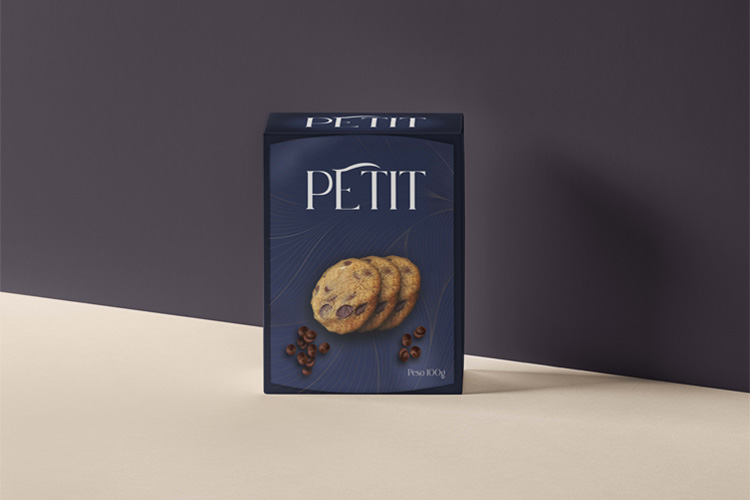

O projeto "esfiha de jaca" foi uma parceiria com o SENAI de alimentos,
onde um grupo de alunos mandaram o briefing e projetamos essa embalagem inovadora. A proposta
é atingir um público específico, os veganos. Feito no segundo semestre do curso

Projeto PETIT, marca sofisticada de biscoitos. Nossa ideia é
trazer elegância e valor para marca pois são biscoitos de alta qualidade e exclusivo.
Feito no segundo semestre.
Suquinho POPJUICE, temática infantil e divertida, o projeto foi pensado
em ser ergonômico e prático para as crianças. As cores chamativas e animais para ter como
mascote. Feito no segundo semestre.